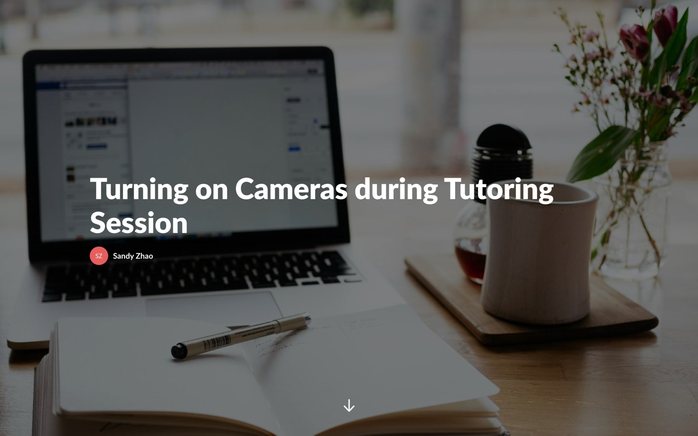
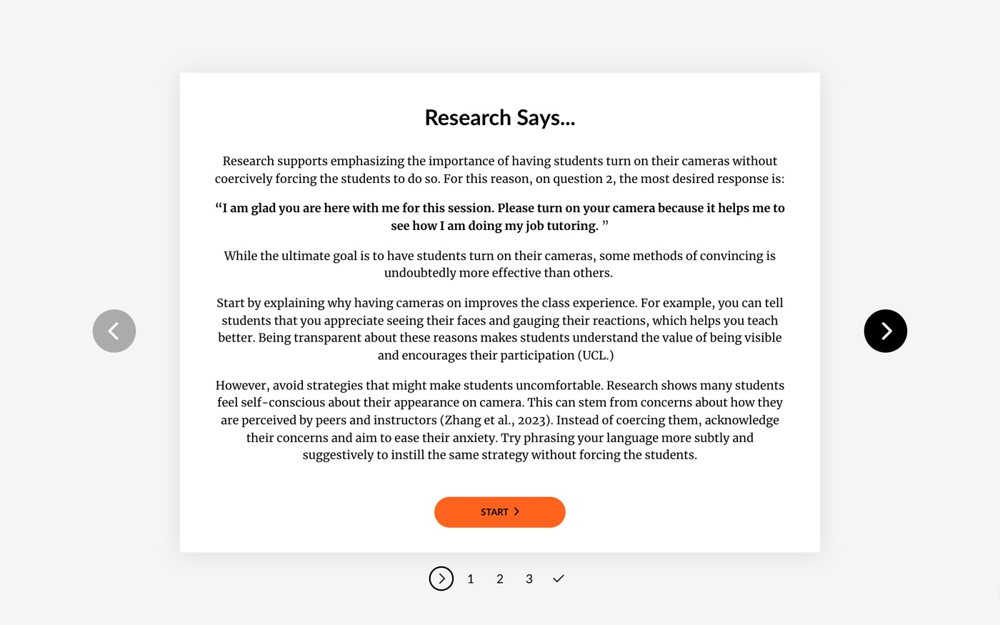

Learning Product Design|K-12|Use in class
Sample Course - Turning on Cameras during Tutoring Session
[The final product]


[About]
This course is a demo of my skills in using Articulate Storyline. [Draft copy — replace with the real story: what prompted this course, e.g. tutors keeping cameras off during virtual sessions, and why that mattered enough to design training around it.] I designed this course to walk student tutors through the etiquette and rationale for turning their cameras on, to help them build stronger rapport with students during virtual tutoring sessions.